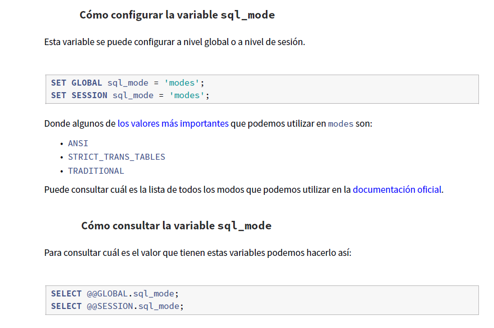

Antes de estudiar cómo se realiza la definición de esquemas de relación (tablas), vamos a estudiar primero en profundidad los tipos de dominio (tipos columna como los denomina MySQL), para que seamos capaces de realizar una correcta especificación de los atributos que componen la tabla.
Un aspecto a tener en cuenta a la hora de elegir los dominios de los atributos, es el espacio de almacenamiento que ocupan y la capacidad de representación.
Comenzaremos estudiando los dominios numéricos. Para todos ellos (‘TINYINT’, ‘SMALLINT’, ‘MEDIUMINT’, ‘INT’, ‘INTEGER’, ‘BIGINT’, ‘REAL’, ‘DOUBLE’, ‘FLOAT’, ‘DECIMAL’ y ‘NUMERIC’), es posible especificar la longitud de muestra mediante el parámetro opcional ’length’, que explicaremos con más detalle más adelante.
Además los dominios numéricos permiten que se especifique si se tendrá en cuenta o no el signo, mediante el parámetro opcional ‘UNSIGNED’.
El parámetro ‘ZEROFILL’ indica que a la hora de mostrar los valores de los atributos, en vez de alinear utilizando espacios, que se utilicen ceros.
Sin duda, los tipos numéricos enteros (números enteros) son los más idóneos a la hora de definir los atributos que serán claves (primaria o alternativa), ya que agilizarán la búsqueda dentro de la tabla a partir de estos atributos. En concreto un atributo clave primaria definido sobre un dominio ‘INT’, permitiría una búsqueda razonadamente rápida . El rango con signo es [-2147483648 a 2147483647]; mientras que el rango sin signo es [0 a 4294967295].
Una posibilidad interesante de SQL es la creación de dominios mediante la orden ‘CREATE DOMAIN’.
Mediante la creación de dominios, podemos personalizar el conjunto de valores que contendrán los atributos de las tablas. MySQL no permite crear nuevos dominios de atributos.
Hasta la versión 8 de MySQL no se implementaban las restricciones de tipo ‘CHECK’ en la instrucción ‘CREATE TABLE’, aunque sí permitía utilizar la cláusula ‘CHECK’ en la definición de la tabla, como vemos en el siguiente código de ejemplo:
Lo que ocurre es que el motor de bases de datos no genera errores a la hora de evaluar la consulta, ya que reconoce las sentencias ‘CHECK’ como código SQL válido. Sería algo similar a especificar una clave ajena (restricción ‘FOREIGN KEY’) en una tabla “MyISAM”, el motor de bases de datos no genera un error de sintaxis, pero tampoco implementa la integridad referencial. La creación de la tabla se realiza con éxito, como se aprecia en la imagen siguiente:

Como vemos a continuación, MySQL a pesar de que se hay permitido la creación de la tabla con las restricciones de CHECK sobre el valor de los atributos, a la hora de hacer las inserciones de datos no tiene en cuenta la cláusula CHECK y se permite ingresar un número de teléfono fuera del rango:
En la actualidad esto ya no es un problema pues tanto MySQL como su fork MariaDB permiten usar la cláusula check sin problemas desde la versión 8.
No obstante, podemos conseguir acciones similares al uso de check mediante el tipo ‘SET’ y mediante el tipo ‘ENUM’,
como vemos en los siguientes subapartados.
TIPO SET ___________________________________________________________________________________________
El tipo ‘SET’ se trata de un objeto de cadenas de caracteres que tiene cero, uno o más valores, cada uno de los cuales debe
elegirse de una lista de valores posibles especificada cuando se crea la tabla. Los valores de columnas ‘SET’ que consisten de
múltiples miembros del conjunto se especifican con los miembros separados por comas (',').
A continuación se muestra un ejemplo de uso del tipo ‘SET’ en la creación de una tabla:
A la hora de insertar datos, si el valor introducido en el atributo ‘ciudad’ se encuentra dentro de los miembros definidos, lo
insertará correctamente; en caso contrario, el valor introducido se ignorará y se insertará una cadena de 0 caracteres (diferente
a NULL). Otra posibilidad del tipo ‘SET’ es que permite insertar más de un valor. En la siguiente imagen se muestran todas las
posibilidades:
Como puede observarse, este tipo especial, permite implementar de forma efectiva que un atributo únicamente pueda ser
almacenado empleando valores que hayamos decidido definir de manera personalizada. Una forma de comprobar aquellos
registros que han sido almacenados con otro valor diferente podría ser mediante el operador ‘LIKE’ o mediante el operador
‘NOT IN’, tal y como se muestra en la imagen siguiente:
TIPO ENUM _________________________________________________________________________________________
El tipo ‘ENUM’ es un objeto de cadenas de caracteres con un valor elegido de una lista de valores permitidos que se enumeran
explícitamente en la especificación de columna en tiempo de creación de la tabla. A diferencia del tipo ‘SET’, un atributo ‘ENUM’
solamente contiene un valor y se puede definir la lista de hasta 65535 valores distintos.
A continuación se muestra un ejemplo de uso del tipo ‘ENUM’ en la creación de una tabla:
En la siguiente imagen puede apreciarse el resultado de la orden ‘DESCRIBE ESTUDIANTES’, donde destaca el tipo ENUM
empleado en el atributo ‘gradosuperior’:
En caso de que en la creación de la tabla se haya permitido ‘NULL’ (como es el caso de arriba), este será el valor por defecto; en caso contrario, y si no se ha definido un valor por defecto mediante la cláusula ‘DEFAULT’, será el primer valor de la lista. En el caso en que se introduzca un valor diferente, el motor de evaluación de consultas de MySQL avisará con un ‘warning’ e insertará la cadena de 0 caracteres (diferente a ‘NULL’). Estas posibilidades se muestran en la siguiente imagen:
